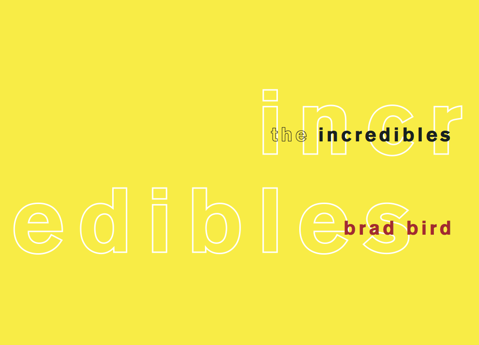

This book was also created for Typography 1, however we were given much more freedom with this assignment. I chose to work on the screenplay for "The Incredibles" as it is one of my favorite movies. I used indentations to represent which character is speaking and different styles of type to separate dialogue, character names, stage direction, etc. I added the yellow stripe in the center to add a playful aspect to my screenplay.
The grid was designed to fit three levels of character dialogue. I worked with small caps, italics, two fonts, and dashes to create a screenplay that looked professional and was easier to read.

Cover, Adobe InDesign
For the cover I wanted to try and tell a little bit of the story of 'The Incredibles' with just type. At first, I played with different letters representing different powers (ie. strected, strong), but that didn't really get me to a design that I was happy with. The cover I ended up sticking to represents both the split in the family that occurs and the idea of identity and masks. The word 'INCREDIBLES' is hard to see against the lighter yellow, representing the super-hero part that the Parr family hides. Having the word split showcases the inner turmoil that takes place in the story.